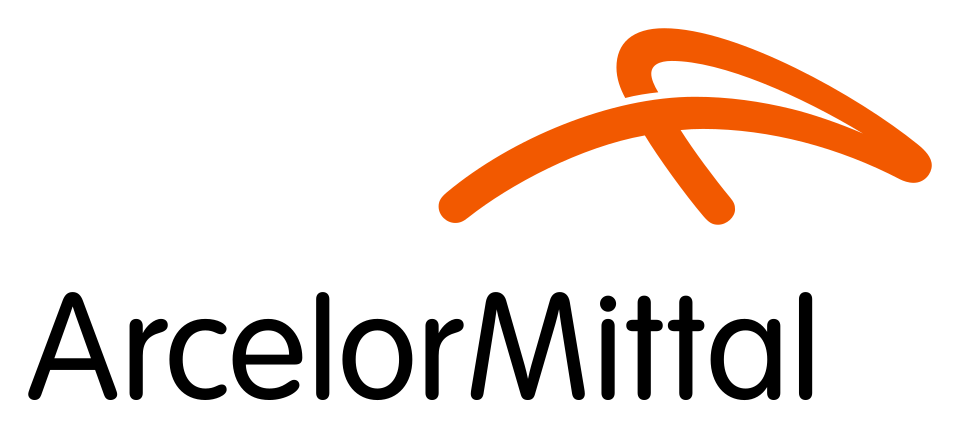

아르셀로미탈 ArcelorMittal
아르셀로미탈(ArcelorMittal)은 룩셈부르크에 본사를 둔 철강 생산업체이다. 2006년 룩셈부르크의 아르셀로와 인도의 미탈이 합병해 출범했으며, 2014년 현재 조강생산량 기준 세계 최대 철강 생산업체이다.
최종 업데이트

아르셀로미탈은 어떤 브랜드인가
아르셀로미탈은 룩셈부르크에 본사를 두고 철강을 생산하는 기업이다. 2006년 인도의 다국적 철강 업체 Mittal Steel이 서유럽의 철강 업체 Arcelor를 인수하면서 창립되었고, 합병된 기업은 ArcelorMittal로 명명되었다.
창립 직후 세계 철강 생산량의 약 10%를 차지하며 세계에서 가장 큰 철강 회사가 되었다. 2014년 현재 조강생산량은 9,810만톤에 이르는 세계 최대 철강 생산업체이며, 2016년 포춘 500대 기업 순위에서 108위를 차지했다.
2008년 12월 여러 공장의 폐쇄를 발표했고, 2011년에는 스테인레스 스틸 사업부를 Aperam으로 분리독립했다. 2013년 12월 31일 기준 232,000여 명을 고용했으며, 룩셈부르크에서 가장 큰 개인 고용주이기도 하다.
아르셀로미탈은 어떻게 시작되고 성장했나
2006년 인도의 다국적 철강 업체 Mittal Steel이 스페인, 프랑스, 룩셈부르크에 걸친 서유럽의 철강 업체 Arcelor를 인수하며 아르셀로미탈이 창립되었다. 인수 조건은 주당 40.37유로였다.
Mittal Steel은 이전에 시도되었으나 주주 승인을 받지 못한 Arcelor와 Severstal의 합병 계획을 대신하는 적대적 인수합병을 실시했다. 그 결과 세계 철강의 약 10%를 생산하는 세계 최대 철강 회사가 되었고, 2007년 총매출액은 1,050억 달러였다.
아르셀로미탈의 브랜드 아이덴티티는 무엇인가
2006년 Mittal Steel의 Arcelor 인수로 탄생한 룩셈부르크 본사의 철강 기업으로, 2014년 현재 조강생산량 기준 세계 최대 규모이다.
아르셀로미탈의 대표 제품과 서비스는 무엇인가
스테인레스 스틸 사업부는 2011년 1월 26일 새로운 계열사 Aperam으로 분리독립했다. 2013년 1월에는 미국 앨라배마주 Calvert에서 ThyssenKrupp AG의 압연기를 15억 달러에 인수했고, 신일철주금과의 합작 투자는 2014년 2월에 마무리되었다.
이 시설은 AM/NS Calvert로 이름이 바뀌었으며, 530만톤의 생산 능력과 핫 스트립 밀, 냉간 압연기, 코팅 라인 4개를 갖추고 있다. 시설의 제품은 아르셀로미탈을 통해 NAFTA 지역에서 판매된다.
아르셀로미탈은 지금 어떤 상태인가
Lakshmi Mittal이 회장 겸 CEO를 맡고 있으며, 그의 가족이 회사의 주식지분 및 의결권의 40%를 소유하고 있다. 2016년 4월에는 30억 달러 규모의 유상증자를 실시했다.
2012년에는 220억 달러의 부채를 지녔고, 과도한 설비와 유럽의 철강 수요 감소로 고로 25대 중 9대가 유휴 상태였다. 2014년 초에는 룩셈부르크 국내에서 4,600명의 직원을 고용했다.
아르셀로미탈 로고는 어떻게 변해왔나
자주 묻는 질문
아르셀로미탈는 언제 설립되었나요?
아르셀로미탈는 2006년 설립되었습니다.
아르셀로미탈는 어떤 산업의 브랜드인가요?
아르셀로미탈는 에너지·산업재 분야의 브랜드입니다.
아르셀로미탈의 브랜드 아이덴티티는 무엇인가요?
2006년 Mittal Steel의 Arcelor 인수로 탄생한 룩셈부르크 본사의 철강 기업으로, 2014년 현재 조강생산량 기준 세계 최대 규모이다.
아르셀로미탈의 대표 제품은 무엇인가요?
스테인레스 스틸 사업부는 2011년 1월 26일 새로운 계열사 Aperam으로 분리독립했다.
아르셀로미탈는 어느 기업이 소유하고 있나요?
Lakshmi Mittal이 회장 겸 CEO를 맡고 있으며, 그의 가족이 회사의 주식지분 및 의결권의 40%를 소유하고 있다.
아르셀로미탈의 창업자는 누구인가요?
아르셀로미탈의 창업자는 락슈미 미탈입니다(위키데이터 기준).
아르셀로미탈의 본사는 어디에 있나요?
아르셀로미탈의 본사는 룩셈부르크에 있습니다(위키데이터 기준).
출처와 검증
아르셀로미탈 관련 참고: 공식 웹사이트 · 위키데이터 Q27893 · 한국어 위키백과 · 영어 위키백과. 브랜드명은 한글과 원어를 함께 표기하되 데이터에 없는 표기는 만들지 않습니다. 기원 국가·설립연도는 검수된 정의문에서 확인된 값을 우선하고, 없을 때만 공식 웹사이트 URL이 일치하는 위키데이터 개체의 값을 씁니다. 위키데이터 값은 2026-11-13 기준입니다.